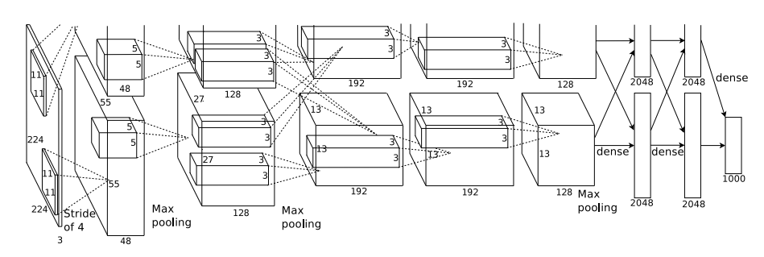
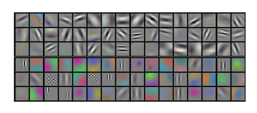
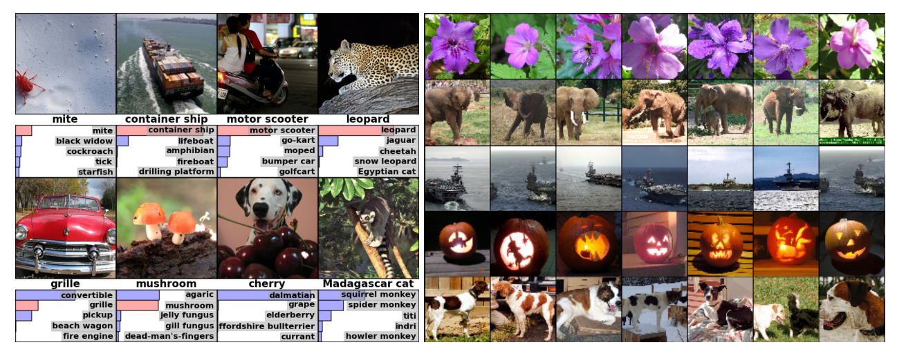

第 2 章 ImageNet Classification with Deep Convolutional Neural Networks
基于深度卷积神经网络的图像分类网络
2.1 Abstract(摘要)
We trained a large, deep convolutional neural network to classify the 1.2 million high-resolution images in the ImageNet LSVRC-2010 contest into the 1000 different classes. On the test data, we achieved top-1 and top-5 error rates of 37.5% and 17.0% which is considerably better than the previous state-of-the-art. The neural network, which has 60 million parameters and 650,000 neurons, consists of five convolutional layers, some of which are followed by max-pooling layers, and three fully-connected layers with a final 1000-way softmax. To make training faster, we used non-saturating neurons and a very efficient GPU implementation of the convolution operation. To reduce overfitting in the fully-connected layers we employed a recently-developed regularization method called “dropout” that proved to be very effective. We also entered a variant of this model in the ILSVRC-2012 competition and achieved a winning top-5 test error rate of 15.3%, compared to 26.2% achieved by the second-best entry.
在ImageNet LSVRC-2010比赛中，我们训练了一个大型深度卷积神经网络，将120万张高分辨率图像分为1000个不同的种类。在测试集上，我们得到了top-1 37.5%, top-5 17.0%的错误率，这比目前最先进的结果还要好得多。这个神经网络有6000万个参数和650000个神经元，包含5个卷积层（某些卷积层后带有池化层）和3个全连接层，最后是一个1000维的softmax。为了训练更快，我们使用了非饱和神经元，并且针对卷积操作进行了非常有效的GPU实现。为了减少全连接层的过拟合，我们采用了最近新开发的名为“dropout”的正则化方法，并且结果证明是非常有效的，我们同样使用这个模型的变种模型，参加ILSVRC-2012竞赛，以top-5 15.3%的错误率赢得了冠军，而第二名错误率是26.2%.
2.2 Introduction(引言)
Current approaches to object recognition make essential use of machine learning methods. To improve their performance, we can collect larger datasets, learn more powerful models, and use better techniques for preventing overfitting. Until recently, datasets of labeled images were relatively small — on the order of tens of thousands of images (e.g., NORB [16], Caltech-101/256 [8, 9], and CIFAR-10/100 [12]). Simple recognition tasks can be solved quite well with datasets of this size, especially if they are augmented with label-preserving transformations. For example, the currentbest error rate on the MNIST digit-recognition task (<0.3%) approaches human performance [4]. But objects in realistic settings exhibit considerable variability, so to learn to recognize them it is necessary to use much larger training sets. And indeed, the shortcomings of small image datasets have been widely recognized (e.g., Pinto et al. [21]), but it has only recently become possible to collect labeled datasets with millions of images. The new larger datasets include LabelMe [23], which consists of hundreds of thousands of fully-segmented images, and ImageNet [6], which consists of over 15 million labeled high-resolution images in over 22,000 categories.
目前目标识别不可避免的使用机器学习的方法。为了提高它们的效率，我们通过收集更多的数据，学习更加强大的模型，使用更好的技术来防止过拟合。直到最近为止，被标准的图像数据集仍相对较小-在数万张图像的量级上（例如，NORB[16]，Caltech-101/256 [8, 9]和CIFAR-10/100 [12]）。简单的识别任务在这样大小的数据集上可以被解决的相当好，特别是当它们通过保留标签的转换进行扩充时。例如，目前在MNIST数字识别任务上最好的识别准确率已经接近人类水平（<0.3）。但是，模型在真实环境下展现出相当大的不定性，因此为了学习识别它们，有必要使用更大的训练数据集。实际上，小图像数据集的缺点已经被广泛认识到（例如，Pinto et al. [21]），但是收集上百万图像的标注数据仅在最近才变得的可行。新的更大的数据集包括LabelMe [23]，它包含了数十万张完全分割的图像，ImageNet[6]，它包含了22000个类别上的超过1500万张标注的高分辨率的图像。
To learn about thousands of objects from millions of images, we need a model with a large learning capacity. However, the immense complexity of the object recognition task means that this problem cannot be specified even by a dataset as large as ImageNet, so our model should also have lots of prior knowledge to compensate for all the data we don’t have. Convolutional neural networks (CNNs) constitute one such class of models [16, 11, 13, 18, 15, 22, 26]. Their capacity can be controlled by varying their depth and breadth, and they also make strong and mostly correct assumptions about the nature of images (namely, stationarity of statistics and locality of pixel dependencies). Thus, compared to standard feedforward neural networks with similarly-sized layers, CNNs have much fewer connections and parameters and so they are easier to train, while their theoretically-best performance is likely to be only slightly worse.
为了从数百万张图像中学习几千个对象，我们需要一个有很强学习能力的模型。然而对象识别任务的巨大复杂性意味着这个问题不能被指定，即使通过像ImageNet这样的大数据集，因此我们的模型应该也有许多先验知识来补偿我们所没有的数据。卷积神经网络(CNNs)构成了一个这样的模型[16, 11, 13, 18, 15, 22, 26]。它们的能力可以通过改变它们的广度和深度来控制，它们也可以对图像的本质进行强大且通常正确的假设（也就是说，统计的稳定性和像素依赖的局部性）。因此，与具有层次大小相似的标准前馈神经网络，CNNs有更少的连接和参数，因此它们更容易训练，而它们理论上的最佳性能可能仅比标准前馈神经网络差一点。
Despite the attractive qualities of CNNs, and despite the relative efficiency of their local architecture, they have still been prohibitively expensive to apply in large scale to high-resolution images. Luckily, current GPUs, paired with a highly-optimized implementation of 2D convolution, are powerful enough to facilitate the training of interestingly-large CNNs, and recent datasets such as ImageNet contain enough labeled examples to train such models without severe overfitting.
尽管CNN具有引人注目的质量，尽管它们的局部架构相当有效，但将它们大规模的应用到到高分辨率图像中仍然是极其昂贵的。幸运的是，目前的GPU，搭配了高度优化的2D卷积实现，强大到足够促进有趣地大量CNN的训练，最近的数据集例如ImageNet包含足够的标注样本来训练这样的模型而没有严重的过拟合。
The specific contributions of this paper are as follows: we trained one of the largest convolutional neural networks to date on the subsets of ImageNet used in the ILSVRC-2010 and ILSVRC-2012 competitions [2] and achieved by far the best results ever reported on these datasets. We wrote a highly-optimized GPU implementation of 2D convolution and all the other operations inherent in training convolutional neural networks, which we make available publicly. Our network contains a number of new and unusual features which improve its performance and reduce its training time, which are detailed in Section 3. The size of our network made overfitting a significant problem, even with 1.2 million labeled training examples, so we used several effective techniques for preventing overfitting, which are described in Section 4. Our final network contains five convolutional and three fully-connected layers, and this depth seems to be important: we found that removing any convolutional layer (each of which contains no more than 1% of the model’s parameters) resulted in inferior performance.
本文具体的贡献如下：我们在ILSVRC-2010和ILSVRC-2012[2]的ImageNet子集上训练了到目前为止最大的神经网络之一，并取得了迄今为止在这些数据集上报道过的最好结果。我们编写了高度优化的2D卷积GPU实现以及训练卷积神经网络内部的所有其它操作，我们把它公开了。我们的网络包含许多新的不寻常的特性，这些特性提高了神经网络的性能并减少了训练时间，详见第三节。即使使用了120万标注的训练样本，我们的网络尺寸仍然使过拟合成为一个明显的问题，因此我们使用了一些有效的技术来防止过拟合，详见第四节。我们最终的网络包含5个卷积层和3个全连接层，深度似乎是非常重要的：我们发现移除任何卷积层（每个卷积层包含的参数不超过模型参数的1%）都会导致更差的性能。
In the end, the network’s size is limited mainly by the amount of memory available on current GPUs and by the amount of training time that we are willing to tolerate. Our network takes between five and six days to train on two GTX 580 3GB GPUs. All of our experiments suggest that our results can be improved simply by waiting for faster GPUs and bigger datasets to become available.
最后，网络尺寸主要受限于目前GPU的内存容量和我们能忍受的训练时间。我们的网络在两个GTX 580 3GB GPU上训练五六天。我们的所有实验表明我们的结果可以简单地通过等待更快的GPU和更大的可用数据集来提高。
2.3 The Dataset（数据集）
ImageNet is a dataset of over 15 million labeled high-resolution images belonging to roughly 22,000 categories. The images were collected from the web and labeled by human labelers using Amazon’s Mechanical Turk crowd-sourcing tool. Starting in 2010, as part of the Pascal Visual Object Challenge, an annual competition called the ImageNet Large-Scale Visual Recognition Challenge (ILSVRC) has been held. ILSVRC uses a subset of ImageNet with roughly 1000 images in each of 1000 categories. In all, there are roughly 1.2 million training images, 50,000 validation images, and 150,000 testing images.
ImageNet数据集有超过1500万的标注高分辨率图像，这些图像属于大约22000个类别。这些图像是从网上收集的，使用了Amazon’s Mechanical Turk的众包工具通过人工标注的。从2010年起，作为Pascal视觉对象挑战赛的一部分，每年都会举办ImageNet大规模视觉识别挑战赛（ILSVRC）。ILSVRC使用ImageNet的一个子集，1000个类别每个类别大约1000张图像。总计，大约120万训练图像，50000张验证图像和15万测试图像。
ILSVRC-2010 is the only version of ILSVRC for which the test set labels are available, so this is the version on which we performed most of our experiments. Since we also entered our model in the ILSVRC-2012 competition, in Section 6 we report our results on this version of the dataset as well, for which test set labels are unavailable. On ImageNet, it is customary to report two error rates: top-1 and top-5, where the top-5 error rate is the fraction of test images for which the correct label is not among the five labels considered most probable by the model.
ILSVRC-2010是ILSVRC竞赛中唯一可以获得测试集标签的版本，因此我们大多数实验都是在这个版本上运行的。由于我们也使用我们的模型参加了ILSVRC-2012竞赛，因此在第六节我们也报告了模型在这个版本的数据集上的结果，这个版本的测试标签是不可获得的。在ImageNet上，按照惯例报告两个错误率：top-1和top-5，top-5错误率是指测试图像的正确标签不在模型认为的五个最可能的便签之中。
ImageNet consists of variable-resolution images, while our system requires a constant input dimensionality. Therefore, we down-sampled the images to a fixed resolution of 256 × 256. Given a rectangular image, we first rescaled the image such that the shorter side was of length 256, and then cropped out the central 256×256 patch from the resulting image. We did not pre-process the images in any other way, except for subtracting the mean activity over the training set from each pixel. So we trained our network on the (centered) raw RGB values of the pixels.
ImageNet包含各种分辨率的图像，而我们的系统要求不变的输入维度。因此，我们将图像进行下采样到固定的256×256分辨率。给定一个矩形图像，我们首先缩放图像短边长度为256，然后从结果图像中裁剪中心的256×256大小的图像块。除了在训练集上对像素减去平均活跃度外，我们不对图像做任何其它的预处理。因此我们在原始的RGB像素值（中心的）上训练我们的网络。
2.4 The Architecture（架构）
The architecture of our network is summarized in Figure 2. It contains eight learned layers — five convolutional and three fully-connected. Below, we describe some of the novel or unusual features of our network’s architecture. Sections 3.1-3.4 are sorted according to our estimation of their importance, with the most important first.
我们的网络架构概括为图2。它包含八个学习层–5个卷积层和3个全连接层。下面，我们将描述我们网络结构中的一些新奇的不寻常的特性。3.1-3.4小节按照我们对它们评估的重要性进行排序，最重要的最优先。
2.4.1 ReLU Nonlinearity（ReLU非线性）
tandard way to model a neuron’s output \(f\) as a function of its input \(x\) is with \(f(x) = tanh(x)\) or \(f(x) = (1 + e^{−x} )^{−1}\) . In terms of training time with gradient descent, these saturating nonlinearities are much slower than the non-saturating nonlinearity \(f(x) = max(0, x)\). Following Nair and Hinton [20], we refer to neurons with this nonlinearity as Rectified Linear Units (ReLUs). Deep convolutional neural networks with ReLUs train several times faster than their equivalents with tanh units. This is demonstrated in Figure 1, which shows the number of iterations required to reach 25% training error on the CIFAR-10 dataset for a particular four-layer convolutional network. This plot shows that we would not have been able to experiment with such large neural networks for this work if we had used traditional saturating neuron models.
将神经元输出 \(f\) 建模为输入 \(x\) 的函数的标准方式是用 \(f(x) = tanh(x)\) 或 \(f(x) = (1 + e^{−x} )^{−1}\) 。考虑到梯度下降的训练时间，这些饱和的非线性比非饱和非线性 \(f(x) = max(0, x)\) 更慢。根据Nair和Hinton[20]的说法，我们将这种非线性神经元称为修正线性单元(ReLU)。采用ReLU的深度卷积神经网络训练时间比等价的 \(tanh(x)\) 单元要快几倍。在图1中，对于一个特定的四层卷积网络，在CIFAR-10数据集上达到25%的训练误差所需要的迭代次数可以证实这一点。这幅图表明，如果我们采用传统的饱和神经元模型，我们将不能在如此大的神经网络上实验该工作。
We are not the first to consider alternatives to traditional neuron models in CNNs. For example, Jarrett et al. [11] claim that the nonlinearity \(f(x) = |tanh(x)|\) works particularly well with their type of contrast normalization followed by local average pooling on the Caltech-101 dataset. However, on this dataset the primary concern is preventing overfitting, so the effect they are observing is different from the accelerated ability to fit the training set which we report when using ReLUs. Faster learning has a great influence on the performance of large models trained on large datasets.
我们不是第一个考虑替代CNN中传统神经元模型的人。例如，Jarrett等人[11]声称非线性函数 \(f(x) = |tanh(x)|\) 与其对比度归一化一起，然后是局部均值池化，在Caltech-101数据集上工作的非常好。然而，在这个数据集上主要的关注点是防止过拟合，因此他们观测到的影响不同于我们使用ReLU拟合数据集时的加速能力。更快的学习对大型数据集上大型模型的性能有很大的影响。

Figure 1: A four-layer convolutional neural network with ReLUs (solid line) reaches a 25% training error rate on CIFAR-10 six times faster than an equivalent network with tanh neurons (dashed line). The learning rates for each network were chosen independently to make training as fast as possible. No regularization of any kind was employed. The magnitude of the effect demonstrated here varies with network architecture, but networks with ReLUs consistently learn several times faster than equivalents with saturating neurons.
图1：使用ReLU的四层卷积神经网络在CIFAR-10数据集上达到25%的训练误差比使用tanh神经元的等价网络（虚线）快六倍。为了使训练尽可能快，每个网络的学习率是单独选择的。没有采用任何类型的正则化。影响的大小随着网络结构的变化而变化，这一点已得到证实，但使用ReLU的网络都比等价的饱和神经元快几倍。
2.4.2 Training on Multiple GPUs（多GPU训练）
A single GTX 580 GPU has only 3GB of memory, which limits the maximum size of the networks that can be trained on it. It turns out that 1.2 million training examples are enough to train networks which are too big to fit on one GPU. Therefore we spread the net across two GPUs. Current GPUs are particularly well-suited to cross-GPU parallelization, as they are able to read from and write to one another’s memory directly, without going through host machine memory. The parallelization scheme that we employ essentially puts half of the kernels (or neurons) on each GPU, with one additional trick: the GPUs communicate only in certain layers. This means that, for example, the kernels of layer 3 take input from all kernel maps in layer 2. However, kernels in layer 4 take input only from those kernel maps in layer 3 which reside on the same GPU. Choosing the pattern of connectivity is a problem for cross-validation, but this allows us to precisely tune the amount of communication until it is an acceptable fraction of the amount of computation.
单个GTX580 GPU只有3G内存，这限制了可以在GTX580上进行训练的网络最大尺寸。事实证明120万图像用来进行网络训练是足够的，但网络太大因此不能在单个GPU上进行训练。因此我们将网络分布在两个GPU上。目前的GPU非常适合跨GPU并行，因为它们可以直接互相读写内存，而不需要通过主机内存。我们采用的并行方案基本上每个GPU放置一半的核（或神经元），还有一个额外的技巧：只在某些特定的层上进行GPU通信。这意味着，例如，第3层的核会将第2层的所有核映射作为输入。然而，第4层的核只将位于相同GPU上的第3层的核映射作为输入。连接模式的选择是一个交叉验证问题，但这可以让我们准确地调整通信数量，直到它的计算量在可接受的范围内。
The resultant architecture is somewhat similar to that of the “columnar” CNN employed by Cire¸san et al. [5], except that our columns are not independent (see Figure 2). This scheme reduces our top-1 and top-5 error rates by 1.7% and 1.2%, respectively, as compared with a net with half as many kernels in each convolutional layer trained on one GPU. The two-GPU net takes slightly less time to train than the one-GPU \(net^2\).
除了我们的列不是独立的之外（看图2），最终的架构有点类似于Ciresan等人[5]采用的“columnar” CNN。与每个卷积层一半的核在单GPU上训练的网络相比，这个方案降分别低了我们的top-1 1.7%，top-5 1.2%的错误率。双GPU网络比单GPU网络稍微减少了训练时间。
2.4.3 Local Response Normalization（局部响应归一化）
ReLUs have the desirable property that they do not require input normalization to prevent them from saturating. If at least some training examples produce a positive input to a ReLU, learning will happen in that neuron. However, we still find that the following local normalization scheme aids generalization. Denoting by \(a^i_{x,y}\) the activity of a neuron computed by applying kernel i at position \((x, y)\) and then applying the ReLU nonlinearity, the response-normalized activity \(b^i_{x,y}\) is given by the expression
ReLU具有让人满意的特性，它不需要通过输入归一化来防止饱和。如果至少一些训练样本对ReLU产生了正输入，那么那个神经元上将发生学习。然而，我们仍然发现接下来的局部响应归一化有助于泛化。\(a^i_{x,y}\) 表示神经元激活，通过在\((x, y)\)位置应用核i，然后应用ReLU非线性来计算，响应归一化激活 \(b^i_{x,y}\) 通过下式给定：
\[b^i_{x,y} = a^i_{x,y}/\bigg(k+\alpha\sum\limits_{j=max(0,i-n/2)}^{min(N-1,i+n/2)}(a_{x,y}^j)^2\bigg)^\beta\]
where the sum runs over n “adjacent” kernel maps at the same spatial position, and N is the total number of kernels in the layer. The ordering of the kernel maps is of course arbitrary and determined before training begins. This sort of response normalization implements a form of lateral inhibition inspired by the type found in real neurons, creating competition for big activities amongst neuron outputs computed using different kernels. The constants \(k\), \(n\), \(\alpha\), and \(\beta\) are hyper-parameters whose values are determined using a validation set; we used \(k = 2\), \(n = 5\), \(\alpha = 10^−4\), and \(\beta = 0.75\). We applied this normalization after applying the ReLU nonlinearity in certain layers (see Section 3.5).
求和运算在n个“毗邻的”核映射的同一位置上执行，N是本层的卷积核数目。核映射的顺序当然是任意的，在训练开始前确定。响应归一化的顺序实现了一种侧抑制形式，灵感来自于真实神经元中发现的类型，为使用不同核进行神经元输出计算的较大活动创造了竞争。常量 \(k\)，\(n\)，\(\alpha\)，\(\beta\) 是超参数，它们的值通过验证集确定；我们设\(k = 2\), \(n = 5\), \(\alpha = 10^−4\), \(\beta = 0.75\)。我们在特定的层使用的ReLU非线性之后应用了这种归一化（请看3.5小节）。
This scheme bears some resemblance to the local contrast normalization scheme of Jarrett et al. [11], but ours would be more correctly termed “brightness normalization”, since we do not subtract the mean activity. Response normalization reduces our top-1 and top-5 error rates by 1.4% and 1.2%, respectively. We also verified the effectiveness of this scheme on the CIFAR-10 dataset: a four-layer CNN achieved a 13% test error rate without normalization and 11% with \(normalization^3\).
这个方案与Jarrett等人[11]的局部对比度归一化方案有一定的相似性，但我们更恰当的称其为“亮度归一化”，因此我们没有减去均值。响应归一化分别减少了top-1 1.4%，top-5 1.2%的错误率。我们也在CIFAR-10数据集上验证了这个方案的有效性：四层CNN在没有标准化的情况下达到13%的测试错误率，而在正则的情况下达到11%。
2.4.4 Overlapping Pooling（重叠池化）
Pooling layers in CNNs summarize the outputs of neighboring groups of neurons in the same kernel map. Traditionally, the neighborhoods summarized by adjacent pooling units do not overlap (e.g., [17, 11, 4]). To be more precise, a pooling layer can be thought of as consisting of a grid of pooling units spaced s pixels apart, each summarizing a neighborhood of size \(z × z\) centered at the location of the pooling unit. If we set \(s = z\), we obtain traditional local pooling as commonly employed in CNNs. If we set \(s < z\), we obtain overlapping pooling. This is what we use throughout our network, with \(s = 2\) and \(z = 3\). This scheme reduces the top-1 and top-5 error rates by 0.4% and 0.3%, respectively, as compared with the non-overlapping scheme \(s = 2\), \(z = 2\), which produces output of equivalent dimensions. We generally observe during training that models with overlapping pooling find it slightly more difficult to overfit.
CNN中的池化层归纳了同一核映射上相邻组神经元的输出。习惯上，相邻池化单元归纳的区域是不重叠的（例如[17, 11, 4]）。更确切的说，池化层可看作由池化单元网格组成，网格间距为\(s\)个像素，每个网格归纳池化单元中心位置\(z × z\)大小的邻居。如果设置\(s = z\)，我们会得到通常在CNN中采用的传统局部池化。如果设置 \(s < z\)，我们会得到重叠池化。这就是我们网络中使用的方法，设置\(s = 2\)，\(z = 3\)。这个方案分别降低了top-1 0.4%，top-5 0.3%的错误率，与非重叠方案\(s = 2\), \(z = 2\)相比，输出的维度是相等的。我们在训练过程中通常观察采用重叠池化的模型，发现它更难过拟合。
2.4.5 Overall Architecture（整体架构）
Now we are ready to describe the overall architecture of our CNN. As depicted in Figure 2, the net contains eight layers with weights; the first five are convolutional and the remaining three are fully-connected. The output of the last fully-connected layer is fed to a 1000-way softmax which produces a distribution over the 1000 class labels. Our network maximizes the multinomial logistic regression objective, which is equivalent to maximizing the average across training cases of the log-probability of the correct label under the prediction distribution.
现在我们准备描述我们的CNN的整体架构。如图2所示，我们的网络包含8个带权重的层；前5层是卷积层，剩下的3层是全连接层。最后一层全连接层的输出是1000维softmax的输入，softmax会产生1000类标签的分布。我们的网络最大化多项逻辑回归的目标，这等价于最大化预测分布下训练样本正确标签的对数概率的均值。
The kernels of the second, fourth, and fifth convolutional layers are connected only to those kernel maps in the previous layer which reside on the same GPU (see Figure 2). The kernels of the third convolutional layer are connected to all kernel maps in the second layer. The neurons in the fully connected layers are connected to all neurons in the previous layer. Response-normalization layers follow the first and second convolutional layers. Max-pooling layers, of the kind described in Section 3.4, follow both response-normalization layers as well as the fifth convolutional layer. The ReLU non-linearity is applied to the output of every convolutional and fully-connected layer.
第2，4，5卷积层的核只与位于同一GPU上的前一层的核映射相连接（看图2）。第3卷积层的核与第2层的所有核映射相连。全连接层的神经元与前一层的所有神经元相连。第1，2卷积层之后是响应归一化层。3.4节描述的这种最大池化层在响应归一化层和第5卷积层之后。ReLU非线性应用在每个卷积层和全连接层的输出上。

Figure 2: An illustration of the architecture of our CNN, explicitly showing the delineation of responsibilities between the two GPUs. One GPU runs the layer-parts at the top of the figure while the other runs the layer-parts at the bottom. The GPUs communicate only at certain layers. The network’s input is 150,528-dimensional, and the number of neurons in the network’s remaining layers is given by 253,440–186,624–64,896–64,896–43,264–4096–4096–1000.
The first convolutional layer filters the 224×224×3 input image with 96 kernels of size 11×11×3 with a stride of 4 pixels (this is the distance between the receptive field centers of neighboring neurons in a kernel map). The second convolutional layer takes as input the (response-normalized and pooled) output of the first convolutional layer and filters it with 256 kernels of size 5 × 5 × 48. The third, fourth, and fifth convolutional layers are connected to one another without any intervening pooling or normalization layers. The third convolutional layer has 384 kernels of size 3 × 3 × 256 connected to the (normalized, pooled) outputs of the second convolutional layer. The fourth convolutional layer has 384 kernels of size 3 × 3 × 192 , and the fifth convolutional layer has 256 kernels of size 3 × 3 × 192. The fully-connected layers have 4096 neurons each.
第1卷积层使用96个核对224 × 224 × 3的输入图像进行滤波，核大小为11 × 11 × 3，步长是4个像素（核映射中相邻神经元感受野中心之间的距离）。第2卷积层使用用第1卷积层的输出（响应归一化和池化）作为输入，并使用256个核进行滤波，核大小为5 × 5 × 48。第3，4，5卷积层互相连接，中间没有接入池化层或归一化层。第3卷积层有384个核，核大小为3 × 3 × 256，与第2卷积层的输出（归一化的，池化的）相连。第4卷积层有384个核，核大小为3 × 3 × 192，第5卷积层有256个核，核大小为3 × 3 × 192。每个全连接层有4096个神经元。
2.5 Reducing Overfitting（减小过拟合）
Our neural network architecture has 60 million parameters. Although the 1000 classes of ILSVRC make each training example impose 10 bits of constraint on the mapping from image to label, this turns out to be insufficient to learn so many parameters without considerable overfitting. Below, we describe the two primary ways in which we combat overfitting.
我们的神经网络架构有6000万参数。尽管ILSVRC的1000类使每个训练样本从图像到标签的映射上强加了10比特的约束，但这不足以学习这么多的参数而没有相当大的过拟合。下面，我们会描述我们用来克服过拟合的两种主要方式。
2.5.1 Data Augmentation（数据增强）
The easiest and most common method to reduce overfitting on image data is to artificially enlarge the dataset using label-preserving transformations (e.g., [25, 4, 5]). We employ two distinct forms of data augmentation, both of which allow transformed images to be produced from the original images with very little computation, so the transformed images do not need to be stored on disk. In our implementation, the transformed images are generated in Python code on the CPU while the GPU is training on the previous batch of images. So these data augmentation schemes are, in effect, computationally free.
图像数据上最简单常用的用来减少过拟合的方法是使用标签保留变换（例如[25, 4, 5]）来人工增大数据集。我们使用了两种独特的数据增强方式，这两种方式都可以从原始图像通过非常少的计算量产生变换的图像，因此变换图像不需要存储在硬盘上。在我们的实现中，变换图像通过CPU的Python代码生成，而此时GPU正在训练前一批图像。因此，实际上这些数据增强方案是计算免费的。
The first form of data augmentation consists of generating image translations and horizontal reflections. We do this by extracting random 224 × 224 patches (and their horizontal reflections) from the 256×256 images and training our network on these extracted \(patches^4\) . This increases the size of our training set by a factor of 2048, though the resulting training examples are, of course, highly inter dependent. Without this scheme, our network suffers from substantial overfitting, which would have forced us to use much smaller networks. At test time, the network makes a prediction by extracting five 224 × 224 patches (the four corner patches and the center patch) as well as their horizontal reflections (hence ten patches in all), and averaging the predictions made by the network’s softmax layer on the ten patches.
第一种数据增强方式包括产生图像变换和水平翻转。我们从256×256图像上通过随机提取224 × 224的图像块实现了这种方式，然后在这些提取的图像块上进行训练。这通过一个2048因子增大了我们的训练集，尽管最终的训练样本是高度相关的。没有这个方案，我们的网络会有大量的过拟合，这会迫使我们使用更小的网络。在测试时，网络会提取5个224 × 224的图像块（四个角上的图像块和中心的图像块）和它们的水平翻转（因此总共10个图像块）进行预测，然后对网络在10个图像块上的softmax层进行平均。
The second form of data augmentation consists of altering the intensities of the RGB channels in training images. Specifically, we perform PCA on the set of RGB pixel values throughout the ImageNet training set. To each training image, we add multiples of the found principal components, with magnitudes proportional to the corresponding eigenvalues times a random variable drawn from a Gaussian with mean zero and standard deviation 0.1. Therefore to each RGB image pixel \(I_{xy} = \left[ \begin{matrix} I^R_{xy} & I^G_{xy} & I^B_{xy} \end{matrix} \right]^T\) we add the following quantity:
第二种数据增强方式包括改变训练图像的RGB通道的强度。具体地，我们在整个ImageNet训练集上对RGB像素值集合执行PCA。对于每幅训练图像，我们加上多倍找到的主成分，大小成正比的对应特征值乘以一个随机变量，随机变量通过均值为0，标准差为0.1的高斯分布得到。因此对于每幅RGB图像像素 \(I_{xy} = \left[ \begin{matrix} I^R_{xy} & I^G_{xy} & I^B_{xy} \end{matrix} \right]^T\) ，我们加上下面的数量：
\[ \left[ \begin{matrix} P_1 & P_2 & P_3 \end{matrix} \right]\left[ \begin{matrix} \alpha_1\lambda_1 & \alpha_2\lambda_2 & \alpha_3\lambda_3 \end{matrix} \right]^T \]
where \(P_i\) and \(\lambda_i\) are \(i\)th eigenvector and eigenvalue of the 3 × 3 covariance matrix of RGB pixel values, respectively, and \(\alpha_i\) is the aforementioned random variable. Each \(\alpha_i\) is drawn only once for all the pixels of a particular training image until that image is used for training again, at which point it is re-drawn. This scheme approximately captures an important property of natural images, namely, that object identity is invariant to changes in the intensity and color of the illumination. This scheme reduces the top-1 error rate by over 1%.
\(P_i\) \(\lambda_i\) 分别是RGB像素值3 × 3协方差矩阵的第i个特征向量和特征值，\(\alpha_i\) 是前面提到的随机变量。对于某个训练图像的所有像素，每个\(\alpha_i\)只获取一次，直到图像进行下一次训练时才重新获取。这个方案近似抓住了自然图像的一个重要特性，即光照的颜色和强度发生变化时，目标身份是不变的。这个方案减少了top 1错误率1%以上。
2.5.2 Dropout
Combining the predictions of many different models is a very successful way to reduce test errors [1, 3], but it appears to be too expensive for big neural networks that already take several days to train. There is, however, a very efficient version of model combination that only costs about a factor of two during training. The recently-introduced technique, called “dropout” [10], consists of setting to zero the output of each hidden neuron with probability 0.5. The neurons which are “dropped out” in this way do not contribute to the forward pass and do not participate in back-propagation. So every time an input is presented, the neural network samples a different architecture, but all these architectures share weights. This technique reduces complex co-adaptations of neurons, since a neuron cannot rely on the presence of particular other neurons. It is, therefore, forced to learn more robust features that are useful in conjunction with many different random subsets of the other neurons. At test time, we use all the neurons but multiply their outputs by 0.5, which is a reasonable approximation to taking the geometric mean of the predictive distributions produced by the exponentially-many dropout networks.
将许多不同模型的预测结合起来是降低测试误差[1, 3]的一个非常成功的方法，但对于需要花费几天来训练的大型神经网络来说，这似乎太昂贵了。然而，有一个非常有效的模型结合版本，它只花费两倍的训练成本。这种最近引入的技术，叫做“dropout”[10]，它会以0.5的概率对每个隐层神经元的输出设为0。那些“失活的”的神经元不再进行前向传播并且不参与反向传播。因此每次输入时，神经网络会采样一个不同的架构，但所有架构共享权重。这个技术减少了复杂的神经元互适应，因为一个神经元不能依赖特定的其它神经元的存在。因此，神经元被强迫学习更鲁棒的特征，它在与许多不同的其它神经元的随机子集结合时是有用的。在测试时，我们使用所有的神经元但它们的输出乘以0.5，对指数级的许多失活网络的预测分布进行几何平均，这是一种合理的近似。
We use dropout in the first two fully-connected layers of Figure 2. Without dropout, our network exhibits substantial overfitting. Dropout roughly doubles the number of iterations required to converge.
我们在图2中的前两个全连接层使用失活。如果没有失活，我们的网络表现出大量的过拟合。失活大致上使要求收敛的迭代次数翻了一倍。
2.6 Details of learning（学习细节）
We trained our models using stochastic gradient descent with a batch size of 128 examples, momentum of 0.9, and weight decay of 0.0005. We found that this small amount of weight decay was important for the model to learn. In other words, weight decay here is not merely a regularizer: it reduces the model’s training error. The update rule for weight \(w\) was
我们使用随机梯度下降来训练我们的模型，样本的batch size为128，动量为0.9，权重衰减为0.0005。我们发现少量的权重衰减对于模型的学习是重要的。换句话说，权重衰减不仅仅是一个正则项：它减少了模型的训练误差。权重 \(w\) 的更新规则是
\[ v_{i+1} := 0.9 \cdot v_i - 0.0005 \cdot \epsilon \cdot w_i - \epsilon \cdot \left\langle \frac{\partial L}{\partial w} \mid_{w_i} \right\rangle _{D_i} \] \[ w_{i+1} := w_i + v_{i+1} \]
where \(i\) is the iteration index, \(v\) is the momentum variable, \(\epsilon\) is the learning rate, and \(\left\langle \frac{\partial L}{\partial w} \mid_{w_i} \right\rangle _{D_i}\) is the average over the \(i\)th batch \(D_i\) of the derivative of the objective with respect to \(w\), evaluated at \(w_i\).
\(i\)是迭代索引，\(v\)是动量变量，\(\epsilon\)是学习率，\(\left\langle \frac{\partial L}{\partial w} \mid_{w_i} \right\rangle _{D_i}\)是目标函数对\(w\)，在\(w_i\)上的第i批微分\(D_i\)的平均。

Figure 3: 96 convolutional kernels of size 11×11×3 learned by the first convolutional layer on the 224×224×3 input images. The top 48 kernels were learned on GPU 1 while the bottom 48 kernels were learned on GPU 2. See Section 6.1 for details.
图3：第一卷积层在224×224×3的输入图像上学习到的大小为11×11×3的96个卷积核。上面的48个核是在GPU 1上学习到的而下面的48个卷积核是在GPU 2上学习到的。更多细节请看6.1小节。
We initialized the weights in each layer from a zero-mean Gaussian distribution with standard deviation 0.01. We initialized the neuron biases in the second, fourth, and fifth convolutional layers, as well as in the fully-connected hidden layers, with the constant 1. This initialization accelerates the early stages of learning by providing the ReLUs with positive inputs. We initialized the neuron biases in the remaining layers with the constant 0.
我们使用均值为0，标准差为0.01的高斯分布对每一层的权重进行初始化。我们在第2，4，5卷积层和全连接隐层将神经元偏置初始化为常量1。这个初始化通过为ReLU提供正输入加速了学习的早期阶段。我们在剩下的层将神经元偏置初始化为0。
We used an equal learning rate for all layers, which we adjusted manually throughout training. The heuristic which we followed was to divide the learning rate by 10 when the validation error rate stopped improving with the current learning rate. The learning rate was initialized at 0.01 and reduced three times prior to termination. We trained the network for roughly 90 cycles through the training set of 1.2 million images, which took five to six days on two NVIDIA GTX 580 3GB GPUs.
我们对所有的层使用相等的学习率，这个是在整个训练过程中我们手动调整得到的。当验证误差在当前的学习率下停止提供时，我们遵循启发式的方法将学习率除以10。学习率初始化为0.01，在训练停止之前降低三次。我们在120万图像的训练数据集上训练神经网络大约90个循环，在两个NVIDIA GTX 580 3GB GPU上花费了五到六天。
2.7 Results（结果）
Our results on ILSVRC-2010 are summarized in Table 1. Our network achieves top-1 and top-5 test set error rates of 37.5% and \(17.0%^5\). The best performance achieved during the ILSVRC-2010 competition was 47.1% and 28.2% with an approach that averages the predictions produced from six sparse-coding models trained on different features [2], and since then the best published results are 45.7% and 25.7% with an approach that averages the predictions of two classifiers trained on Fisher Vectors (FVs) computed from two types of densely-sampled features [24].
我们在ILSVRC-2010上的结果概括为表1。我们的神经网络取得了top-1 37.5%，top-5 17.0%的错误率。在ILSVRC-2010竞赛中最佳结果是top-1 47.1%，top-5 28.2%，使用的方法是对6个在不同特征上训练的稀疏编码模型生成的预测进行平均，从那时起已公布的最好结果是top-1 45.7%，top-5 25.7%，使用的方法是平均在Fisher向量（FV）上训练的两个分类器的预测结果，Fisher向量是通过两种密集采样特征计算得到的[24]。
| Model | Top-1 | Top-5 |
|---|---|---|
| Sparse coding [2] | 47.1% | 28.2% |
| SIFT + FVs [24] | 45.7% | 25.7% |
| CNN | 37.5 | 17.0% |
Table 1: Comparison of results on ILSVRC-2010 test set. In italics are best results achieved by others.
表1：ILSVRC-2010测试集上的结果对比。斜体是其它人取得的最好结果。
We also entered our model in the ILSVRC-2012 competition and report our results in Table 2. Since the ILSVRC-2012 test set labels are not publicly available, we cannot report test error rates for all the models that we tried. In the remainder of this paragraph, we use validation and test error rates interchangeably because in our experience they do not differ by more than 0.1% (see Table 2). The CNN described in this paper achieves a top-5 error rate of 18.2%. Averaging the predictions of five similar CNNs gives an error rate of 16.4%. Training one CNN, with an extra sixth convolutional layer over the last pooling layer, to classify the entire ImageNet Fall 2011 release (15M images, 22K categories), and then “fine-tuning” it on ILSVRC-2012 gives an error rate of 16.6%. Averaging the predictions of two CNNs that were pre-trained on the entire Fall 2011 release with the aforementioned five CNNs gives an error rate of 15.3%. The second-best contest entry achieved an error rate of 26.2% with an approach that averages the predictions of several classifiers trained on FVs computed from different types of densely-sampled features [7].
我们也用我们的模型参加了ILSVRC-2012竞赛并在表2中报告了我们的结果。由于ILSVRC-2012的测试集标签不可以公开得到，我们不能报告我们尝试的所有模型的测试错误率。在这段的其余部分，我们会使用验证误差率和测试误差率互换，因为在我们的实验中它们的差别不会超过0.1%（看图2）。本文中描述的CNN取得了top-5 18.2%的错误率。五个类似的CNN预测的平均误差率为16.4%。为了对ImageNet 2011秋季发布的整个数据集（1500万图像，22000个类别）进行分类，我们在最后的池化层之后有一个额外的第6卷积层，训练了一个CNN，然后在它上面进行“fine-tuning”，在ILSVRC-2012取得了16.6%的错误率。对在ImageNet 2011秋季发布的整个数据集上预训练的两个CNN和前面提到的五个CNN的预测进行平均得到了15.3%的错误率。第二名的最好竞赛输入取得了26.2%的错误率，他的方法是对FV上训练的一些分类器的预测结果进行平均，FV在不同类型密集采样特征计算得到的。
| Model | Top-1(val) | Top-5(val) | Top-5(test) |
|---|---|---|---|
| SIFT + FVs [7] | - | - | 26.2% |
| 1 CNN | 40.7% | 18.2% | - |
| 5 CNNs | 38.1% | 16.4% | 16.4% |
| 1 CNN* | 39.0% | 16.6% | - |
| 7 CNNs* | 36.7% | 15.4% | 15.3% |
Table 2: Comparison of error rates on ILSVRC-2012 validation and test sets. In italics are best results achieved by others. Models with an asterisk* were “pre-trained” to classify the entire ImageNet 2011 Fall release. See Section 6 for details.
表2：ILSVRC-2012验证集和测试集的误差对比。斜线部分是其它人取得的最好的结果。带星号的是“预训练的”对ImageNet 2011秋季数据集进行分类的模型。更多细节请看第六节。
Finally, we also report our error rates on the Fall 2009 version of ImageNet with 10,184 categories and 8.9 million images. On this dataset we follow the convention in the literature of using half of the images for training and half for testing. Since there is no established test set, our split necessarily differs from the splits used by previous authors, but this does not affect the results appreciably. Our top-1 and top-5 error rates on this dataset are 67.4% and 40.9%, attained by the net described above but with an additional, sixth convolutional layer over the last pooling layer. The best published results on this dataset are 78.1% and 60.9% [19].
最后，我们也报告了我们在ImageNet 2009秋季数据集上的误差率，ImageNet 2009秋季数据集有10,184个类，890万图像。在这个数据集上我们按照惯例用一半的图像来训练，一半的图像来测试。由于没有建立测试集，我们的数据集分割有必要不同于以前作者的数据集分割，但这对结果没有明显的影响。我们在这个数据集上的的top-1和top-5错误率是67.4%和40.9%，使用的是上面描述的在最后的池化层之后有一个额外的第6卷积层网络。这个数据集上公开可获得的最好结果是78.1%和60.9%[19]。
2.7.1 Qualitative Evaluations（定性评估）
Figure 3 shows the convolutional kernels learned by the network’s two data-connected layers. The network has learned a variety of frequency- and orientation-selective kernels, as well as various colored blobs. Notice the specialization exhibited by the two GPUs, a result of the restricted connectivity described in Section 3.5. The kernels on GPU 1 are largely color-agnostic, while the kernels on on GPU 2 are largely color-specific. This kind of specialization occurs during every run and is independent of any particular random weight initialization (modulo a renumbering of the GPUs).
图3显示了网络的两个数据连接层学习到的卷积核。网络学习到了大量的频率核、方向选择核，也学到了各种颜色点。注意两个GPU表现出的专业化，3.5小节中描述的受限连接的结果。GPU 1上的核主要是没有颜色的，而GPU 2上的核主要是针对颜色的。这种专业化在每次运行时都会发生，并且是与任何特别的随机权重初始化（以GPU的重新编号为模）无关的。

Figure 4: (Left) Eight ILSVRC-2010 test images and the five labels considered most probable by our model. The correct label is written under each image, and the probability assigned to the correct label is also shown with a red bar (if it happens to be in the top 5). (Right) Five ILSVRC-2010 test images in the first column. The remaining columns show the six training images that produce feature vectors in the last hidden layer with the smallest Euclidean distance from the feature vector for the test image.
图4：（左）8张ILSVRC-2010测试图像和我们的模型认为最可能的5个标签。每张图像的下面是它的正确标签，正确标签的概率用红条表示（如果正确标签在top 5中）。（右）第一列是5张ILSVRC-2010测试图像。剩下的列展示了6张训练图像，这些图像在最后的隐藏层的特征向量与测试图像的特征向量有最小的欧氏距离。
In the left panel of Figure 4 we qualitatively assess what the network has learned by computing its top-5 predictions on eight test images. Notice that even off-center objects, such as the mite in the top-left, can be recognized by the net. Most of the top-5 labels appear reasonable. For example, only other types of cat are considered plausible labels for the leopard. In some cases (grille, cherry) there is genuine ambiguity about the intended focus of the photograph.
在图4的左边部分，我们通过在8张测试图像上计算它的top-5预测定性地评估了网络学习到的东西。注意即使是不在图像中心的目标也能被网络识别，例如左上角的小虫。大多数的top-5标签似乎是合理的。例如，对于美洲豹来说，只有其它类型的猫被认为是看似合理的标签。在某些案例（格栅，樱桃）中，网络在意的图片焦点真的很含糊。
Another way to probe the network’s visual knowledge is to consider the feature activations induced by an image at the last, 4096-dimensional hidden layer. If two images produce feature activation vectors with a small Euclidean separation, we can say that the higher levels of the neural network consider them to be similar. Figure 4 shows five images from the test set and the six images from the training set that are most similar to each of them according to this measure. Notice that at the pixel level, the retrieved training images are generally not close in L2 to the query images in the first column. For example, the retrieved dogs and elephants appear in a variety of poses. We present the results for many more test images in the supplementary material.
探索网络可视化知识的另一种方式是思考最后的4096维隐藏层在图像上得到的特征激活。如果两幅图像生成的特征激活向量之间有较小的欧式距离，我们可以认为神经网络的更高层特征认为它们是相似的。图4表明根据这个度量标准，测试集的5张图像和训练集的6张图像中的每一张都是最相似的。注意在像素级别，检索到的训练图像与第一列的查询图像在L2上通常是不接近的。例如，检索的狗和大象似乎有很多姿态。我们在补充材料中对更多的测试图像呈现了这种结果。
Computing similarity by using Euclidean distance between two 4096-dimensional, real-valued vectors is inefficient, but it could be made efficient by training an auto-encoder to compress these vectors to short binary codes. This should produce a much better image retrieval method than applying auto-encoders to the raw pixels [14], which does not make use of image labels and hence has a tendency to retrieve images with similar patterns of edges, whether or not they are semantically similar
通过两个4096维实值向量间的欧氏距离来计算相似性是效率低下的，但通过训练一个自动编码器将这些向量压缩为短二值编码可以使其变得高效。这应该会产生一种比将自动编码器应用到原始像素上[14]更好的图像检索方法，自动编码器应用到原始像素上的方法没有使用图像标签，因此会趋向于检索与要检索的图像具有相似边缘模式的图像，无论它们是否是语义上相似。
2.8 Discussion（探讨）
Our results show that a large, deep convolutional neural network is capable of achieving record-breaking results on a highly challenging dataset using purely supervised learning. It is notable that our network’s performance degrades if a single convolutional layer is removed. For example, removing any of the middle layers results in a loss of about 2% for the top-1 performance of the network. So the depth really is important for achieving our results.
我们的结果表明一个大型深度卷积神经网络在一个具有高度挑战性的数据集上使用纯有监督学习可以取得破纪录的结果。值得注意的是，如果移除一个卷积层，我们的网络性能会降低。例如，移除任何中间层都会引起网络损失大约2%的top-1性能。因此深度对于实现我们的结果非常重要。
To simplify our experiments, we did not use any unsupervised pre-training even though we expect that it will help, especially if we obtain enough computational power to significantly increase the size of the network without obtaining a corresponding increase in the amount of labeled data. Thus far, our results have improved as we have made our network larger and trained it longer but we still have many orders of magnitude to go in order to match the infero-temporal pathway of the human visual system. Ultimately we would like to use very large and deep convolutional nets on video sequences where the temporal structure provides very helpful information that is missing or far less obvious in static images.
为了简化我们的实验，我们没有使用任何无监督的预训练，尽管我们希望它会有所帮助，特别是在如果我们能获得足够的计算能力来显著增加网络的大小而标注的数据量没有对应增加的情况下。到目前为止，我们的结果已经提高了，因为我们的网络更大、训练时间更长，但为了匹配人类视觉系统的下颞线（视觉专业术语）我们仍然有许多数量级要达到。最后我们想在视频序列上使用非常大的深度卷积网络，视频序列的时序结构会提供非常有帮助的信息，这些信息在静态图像上是缺失的或远不那么明显。